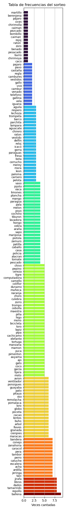
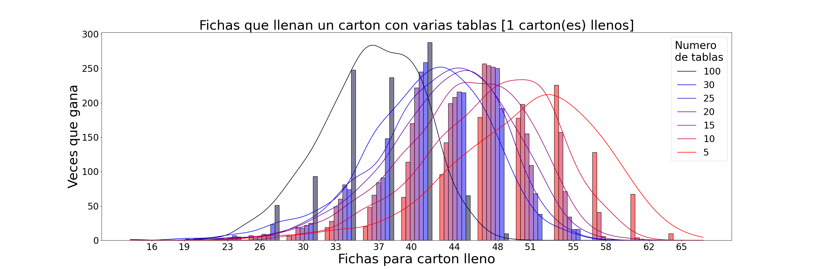

Introducción
La motivaciones hacen las diferencias, porque las buenas acciones solo pueden ser vista por nuestros corazones. Las fiestas que se celebraban cada dos fines de semanas empezaron a llamar mi atención hasta que un día me acerque y encontr칠 un mar de personas sentadas en mesas imporvisadas donde llenaban cartones con diferentes figuras, en la oscuridad de la noche, algunos aprovechaban la luz de los postes y otros se ayudaban con sus telefonos moviles, como si cada personas manisfestara su esperazan con el brillo de su lampara. Con tanta gente reunidad, era imposible que descartar la posibilidad de descubir 쮺omo es el juego de La Loteria?
Recorde que la lotería se remonta al siglo II AC, los chinos y los britanicos las usaron para financiar sus proyectos de expansión. Recuerdo que me parecía un buen negocio a primera vista, porque todos las partes ganan más de lo que tenian antes. Para los que no conocen el juego, la loteria tradicional, conciste en un conjunto de fichas que estan dentro de una bolsa y un conjunto de tablas, que contiene grupos de estas fichas ordenados en filas y columnas, estos cartones deberian ser todos diferentes, entonces, una mano inocente va sacando las fichas de una bolsa y se gana cuando se cumple el requisito para ganar, que puede ser, una fila llena, una columna llena, 4 esquinas, el centro o en algunos casos, llenar todo el carton.
Pero en esta lotería, tenemos 6 cartones compuestos por dos filas de 4 cuatro fichas, algo así como 140 fichas y hasta el año pasado contaba con mas o menos 50.000 cartones hechos a mano. Con 140 fichas se pueden hacer muchisimos más cartones sin repetir.

Estamos hablando de $4,976𝑥10^{11}$ tablas, no obstante, concursar con todos esos cartones seria bien aburrido, solo harían falta 8, 16 o 24 fichas necesarias para llenar 1, 2 o 3 cartones, respectivamente, dependiendo del sorteo que se haga, son 8 sorteos en total en donde el primero y el septimo se necesitan llenar 2 cartones, este tiene un premio con un valor de 800 a 1200$, del 2do al 6to, se necesita llenar solo un carton para optar a 300$ de premio y el último sorteo, se necesitan llenar 3 cartones para optar al premio mayo que ultimamente ha estadon entre 6000 y 8000 $.
Como les insinue al principio, el tipo de motivacion que usemos para alcanzar nuestras metas hace la diferencia, a mi me vencio la curiosidad de conocer más sobre el juego, en este punto, fui bastante peresoso, en ves de esperar 5 años para registrar un número significativos de datos, me fuí por el camino facil y simule muchos, pero muchisimos sorteos y aprendí mucho sobre el juego.
Conocer y Comprender
Contar es una habilidad nata en todos nosotros asi como lo puede ser comer, reposar... asi como cuando va acomprar comida y le parece que no es el peso correcto o le dan un vuelto incorrecto o cuando esta en una cola de bus e intenta responder cuantos buses faltan para llegar a su turno. Me gusta ver a quien tengo alrededor, me resultó muy curioso, la forma en la que la gente reacciona a las fichas cantadas en el sorteo, es inevitable no escuchar comentarios como 'Ahora vienes a salir coñ...', 'primera vez', ' otra ves el burro' y porque no 'el martillo tiene tiempo que no sale'.
. Siempre me hago recordar que la inteligencia colectiva no es una panacea para todos los problemas y desafíos que enfrentamos, pero puede ser una herramienta valiosa para abordarlos de manera efectiva. Aquellas voces anonimas se convirtineron en mi inspiración, por lo que me decidí a contestar la siguiente pregunta. 쮺omo se puede ganar en este juego?, para no decir otra v4!n@.
Comprender
toda las experiencias nos dejan un saldo postivo, porque, hasta el momento no he ganado ningun sorteo, sin embargo la satisfaccion de comprender un problema mientras lo vives, deberia valer más que materializar una victoria basada en el azar. Por que lo dura es bueno y la plata siempre se gasta. Ademas, el anelo de un futuro donde conseguimos un premio nos lleva mas penas, porque sencillamente no sabe cuanto va a esperar, o Si? Luego de comprender que la ciencia no me iba a dar el premio gordo, me dedique a estudiar el juego.

Conocer
Aproveche de vicitar al mono poto, le explique como era el juego y que me gustaria ganar y el me recomendo que escogiera cartones con muchas fichas repetidas, que jugara en sorteos pequeños, donde no hubiese tanta gente y que ademas, jugara con varaitas tablas que fueran diferentes, que las fichas de una tabla no este en las fichas de otra. Tambien me conto que poco a poco iba a darme cuenta cuando est´aban por cantar loteria y de cuales fichas salian más que otra, porque, sitando lo que me dijo, 'fichas hechas a mano dentro de un bolsa, eso no es nada justo'. La verdad esto ultimo se lo creo porque en un dado perforado, las fichas que mas salen son 6,5 y 4, porque son los lados que pesan menos por el poco de hueco que tienen. Le tome la palabra y me resultó, porque ahora lleno más los cartones, pero como me ganó curiosidad, le pedi ayuda a otra amiga y me dijo que con python podia hacer todas las loterias que quisera y así podía ver porque El poto mono me dijo lo que me dijo.
Resultados
Hice varias simulaciones, unas para ver el como influia el número de fichas, otra para ver como influia el número de cartones, una tercera para ver como era una loteria con fichas aleatorio y por ultimo una cuarta para ver con influia las fichas seudoaleatorias en los resultados.
| Conf | Primera | Segunda | Tercera | Cuarta |
|---|---|---|---|---|
| N.Fchs | [50-170] 10 en 10 | 80 | 80 | 80 |
| C.win | [1,2,3] sd(1) | [1,2,3] Unico | [1,2,3] Mismo | [1,2,3] Mismo |
| N.Cart. | 1 | [5-30] 5/5 | 100 | 100 |
| dist | Unfrm | Unfrm | Unfrm | NoUnfrm |
| N.Rond | 1k x C/U | 1k x C/U | [5k,2k,1k] | [5k,2k,1k] |
luego de ese poco de loteria que hizo la culebrota en la pc, anotando las fichas cantadas hasta que algunos de los carones hechan lotería, se puede ver por el mono poto nos dijo lo de los cartones, quizas usted ya lo imaginón pero vean esta joyita.
 cuando hay mas fichas, el rango de fichas catada en la que se gana una loteria se va ensachando, por eso vemos una montaña bien alta en rojo para 50 fichas y esta loma, va callendo hasta llegar 170 fichas, tabien se nota, que el numero de cartones llenos hace que esta loma gris, para las tres formas de ganar, 1,2 y 3 cartones llenos, sea mas empinada en cada caso respetivo.
cuando hay mas fichas, el rango de fichas catada en la que se gana una loteria se va ensachando, por eso vemos una montaña bien alta en rojo para 50 fichas y esta loma, va callendo hasta llegar 170 fichas, tabien se nota, que el numero de cartones llenos hace que esta loma gris, para las tres formas de ganar, 1,2 y 3 cartones llenos, sea mas empinada en cada caso respetivo.

Por eso es que por ceparado, la sombra de cada linea, es más angosta y asu ves es mas inclinada. Es decir que para pocos cartones, ganar una loteria con tres cartones llenos, podria a estar entre la ficha 85 y la ficha 100, y para llenar un carton estaria entre la ficha 80 y la 120.
Cuando agregamos los cartones, el indicador va cambiando, por ejemplo, si jugamos con todos los cartones posibles sin repetir ninguno, 쮺uantas fichas tienen que cantarse para que se llene 1 carton? Pues resulta que solo 8 fichas y es que estan todas las combinaciones posibles, este hecho ya nos da la idea de que a medida que aumenta el numero de cartones, o tablas en juego, la cantidad de fichas cantdas antes de cumplir la condicion para ganar va a disminuir, eso se aprecia en la siguentes graficas.



Esto podria ser un indicador para saber contra cuantos estamos jugando en promedio, porque, del mismo modo que usted no sabe cuanto es exactamente 1 minuto, tambopo va a saber en que ficha exacta van a cantar loteria. Esta habilidad varia entre individuos, pero es util al momento de identificar si hay o no un truco, aprovecho para resaltar que lo que dijo el mono poto, que usar unas fichas en una bolsa no nos garantizará que todas las fichas tienen la misma capacidad de salir. Y es que me tome la libertad de hacer el registro de dos sorteos y apareció esto.
Pero antes de ver el conteo de fichas, me gustaria mostrar como se veria el contraste entre una baraja aleatorio y una baraja con diferente peso, por ejemplo, las fichas mas pesadas y mas al fondo salen menos que las mas livianas y en la superfice. Para esto, le di una ventaja del 20% a las fichas del primer carton. Aclaro, que las fichas del primer caton tambien estan repartidas en los demas cartones.
 En este grafico tenemos 100 filas que representan 100 tablas de la tercera y cuarta simulacion, para 1000 sorteos, cada carton de cada tabla gano n veces, si en una tabla todos los cartones ganaron 4 veces cada uno, entonces aparecera un solo cuadro oscuro en el 4 de las horizontal, y si solo uno carton gano 8 veces y los demas 1,2,3,4,5, veremos 6 cuadros claros en las marcas 1, 2, 3, 4, 5 y 8. Si nos fijamos nada mas en el primer caton vemos que para 1 carton lleno, la trampa no es muy evidente la marcas azules son muy parecidas sin embargo para 3 cartones se aprecia que la tabla gana mas de 12 doce veces cada carton a diferencia de una baraja aleatoria que paenas llega 8 y 9 veces a completar 3 cartones. Y para demostrar que el mono poto tenia razon, aqui les dejo la distribución de fichas de 2 sorteos.
En este grafico tenemos 100 filas que representan 100 tablas de la tercera y cuarta simulacion, para 1000 sorteos, cada carton de cada tabla gano n veces, si en una tabla todos los cartones ganaron 4 veces cada uno, entonces aparecera un solo cuadro oscuro en el 4 de las horizontal, y si solo uno carton gano 8 veces y los demas 1,2,3,4,5, veremos 6 cuadros claros en las marcas 1, 2, 3, 4, 5 y 8. Si nos fijamos nada mas en el primer caton vemos que para 1 carton lleno, la trampa no es muy evidente la marcas azules son muy parecidas sin embargo para 3 cartones se aprecia que la tabla gana mas de 12 doce veces cada carton a diferencia de una baraja aleatoria que paenas llega 8 y 9 veces a completar 3 cartones. Y para demostrar que el mono poto tenia razon, aqui les dejo la distribución de fichas de 2 sorteos.
Que habrá visto el mono?
Esto no es determinante, estamos contrastando miles de rondas de juego contra apenas 1600 fichas cantadas, mucha gente comente que la última loteria es diferente, salen otras fichas, lo que no deberia ser posible, puden que uno o dos sorteos sean diferentes pero que 7 de los 8 sorteos tengas una frecuencias evidente y que el octavo cambie por completo las la frecuenica de salida de fichas, en todas la celebraciones?
Por el momentono no me interesa hacer analisis que compromentan mi palabra, sin embargo, le invito, que al igual que yo haga sus propias conclusiones.
Por ejemplo, cuando usted note las loterias se estan ganando muy rapido, tenga la certeza que hay al menos el doble de gente que otras veces, si siempre trada mucho en sacar la polla, cuando hay tanta gente, puede sospechar de algo raro, como dije, este metodo solo cuenta las veces que sucede algo y de este modo, estiamar que tan regular es el evento. Porque se puede ganar la loteria con las primeras 8 fichas.
Aunque la inteligencia colectiva puede carecer de memoria y no siempre producir resultados inmediatos, puede tener un impacto significativo en la resolución de problemas y la toma de decisiones a largo plazo. Al escuchar y valorar las voces del anonimato, podemos aprovechar el poder de la sabiduría colectiva para abordar los desafíos que enfrentamos y crear un futuro más próspero y sostenible para todos.